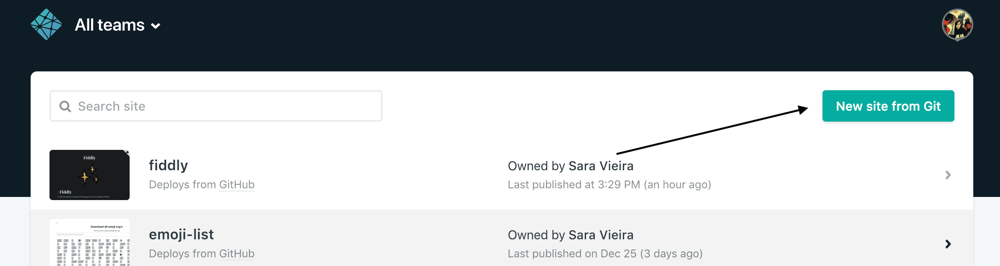

oranda
Download for your platform
Deployment
Netlify
Head over to https://netlify.com and click on new site from git:

It will ask you to choose a provider and choose the one you are using. After that it will ask you for what repo it is and after you selected it just select these options on the next screen:

The public folder may be a different one depending on the dist folder you selected
Now
To use Now, first create a file called now.json and put the following options in it:
{
"version": 2,
"builds": [
{
"src": "package.json",
"use": "@now/static-build",
"config": { "distDir": "public" }
}
]
}
{
"version": 2,
"builds": [
{
"src": "package.json",
"use": "@now/static-build",
"config": { "distDir": "public" }
}
]
}
The distDir folder may be a different one depending on the dist folder you selected
For Now to build oranda when deploying, to ensure a fresh build for each deployment, add the following script to your package.json scripts list to let Now know to use oranda to build your readme as the index.
{
"now-build": "oranda"
}
{
"now-build": "oranda"
}
For more info you can check the Now docs
Surge
To deploy with Surge you need a http://surge.sh account and then to install the surge cli or like me run with npx. It will ask you to login and after that it wants to know the project path. In here you put the dist folder. After that pick and domain and done 🎉

GitHub Pages
For GitHub pages there is a command:
oranda deploy
oranda deploy
This command will build your project if no version exists and deploy it to gh-pages branch on github.
It uses gh-pages under the hood so any options you pass there you can also pass in your deployment option in .oranda.config.json.
✨
Gitlab Pages
To deploy to Gitlab Pages add a new job with the title pages in your .gitlab-ci.yml configuration file.
Gitlab Pages hosts your static files at https://<group-or-user-name>.gitlab.io/<project-name>.
You can use the PATH_PREFIX environment variable to configure your oranda build.
🎉
pages:
image: node
script:
- PATH_PREFIX="/$CI_PROJECT_NAME" npx oranda
artifacts:
paths:
- public
only:
- master
pages:
image: node
script:
- PATH_PREFIX="/$CI_PROJECT_NAME" npx oranda
artifacts:
paths:
- public
only:
- master